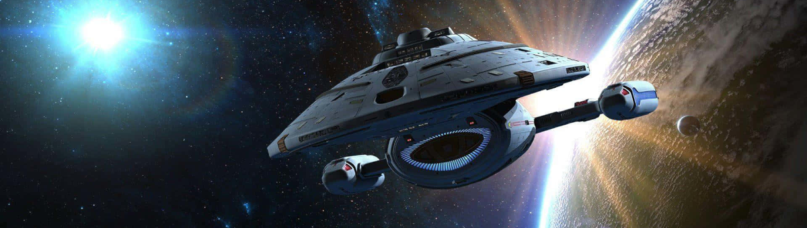

Campaigns
Characters
Ships
Companion
How to Use the Companion
- Momentum and Threat are core mechanics in Star Trek Adventures. Use the tracker to keep count for your table or solo play. Momentum max is 6, Threat max is 20.
- Notes are for session tracking, reminders, or anything you want to jot down. Notes are saved automatically in your browser.
- You can Export your current settings (Momentum, Threat, Notes) as a JSON file for backup or sharing.
- You can Load a previously exported JSON file to restore your session state.
- Momentum and Threat are tracked per session. For campaign play, consider exporting after each session.
- For more on STA rules, see Modiphius: Star Trek Adventures.
Tracker
Momentum
0
Threat
0
Notes
About

Star Trek Adventures (Jamie Harper's Mission Reports)
This application is a collection of mission reports written by Jamie Harper, a player of the Star Trek Adventures tabletop RPG.